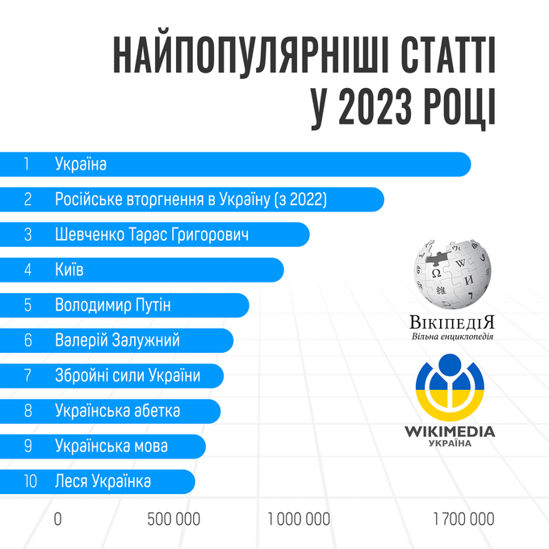

Стаття про Україну стала найпопулярнішим запитом української вікіпедії у 2023 році
У межах української вікіпедії у минулому році найбільшу кількість пошуків зібрала стаття про Україну
Про це інформує Рубрика, посилаючись на ГО "Вікімедіа Україна"
- У 2023 році користувачі найбільше шукали статтю про Україну, її переглянули 1,6 мільйона разів.
- На другому місці – стаття про російське вторгнення в Україну з 2022 року, яку переглянули понад 1,3 мільйона разів.
- А третє місце посіла стаття про українського поета Тараса Шевченка – майже мільйон переглядів.
Користувачі також найбільше цікавилися статтями про:
- Валерія Залужного,
- Володимира Зеленського,
- Кирила Буданова.
Серед загиблих українців багато переглядів отримали статті
про командира першої ОМБ
"Вовки
Да
Вінчі" Дмитра Коцюбайла
й міністра внутрішніх справ України Дениса
Монастирського.
Також українці цікавилися Володимиром Путіним і Євгеном Пригожиним.
Популярними запитами також були статті про Ізраїль, Росію, Велику Британію, Польщу, Німеччину й Сектор Гази.
А серед історичної тематики – Київська Русь, Волинська трагедія й Голодомор в Україні (1932–1933).
У 2022 році користувачі вікіпедії найбільше читали статтю про російське вторгнення в Україну.
Друге місце посідає стаття про радника Офісу президента Олексія Арестовича.
На третьому місці – стаття з назвою "Україна".
У 2021 році першою за кількістю переглядів стала стаття про Україну (у 2022 році вона перемістилася на третє місце). На другому місці опинилася стаття про Тараса Григоровича Шевченка (тепер на 15), а на третьому – про Київ (зараз ця стаття на шостому місці).
Нагадаємо, що "Діджиталізація" стала словом року за версією словника сучасної української мови та сленгу "Мислово".
Також повідомляли, що слово "мобілізація" було вибрано словником сучасної української мови та сленгу "Мислово" – словом 2023 року в Україні.